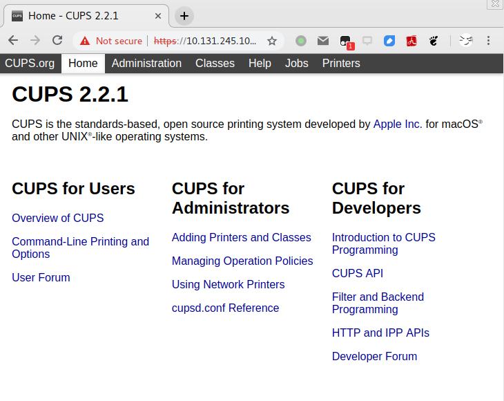
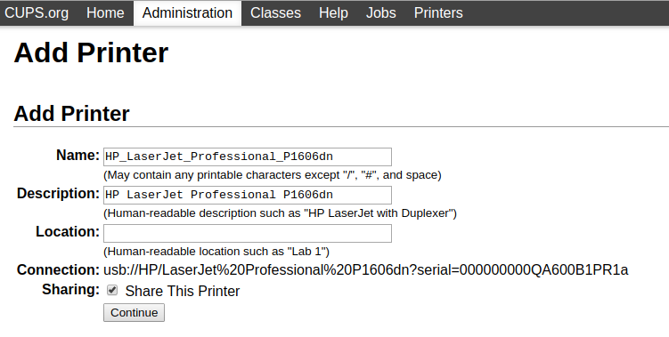
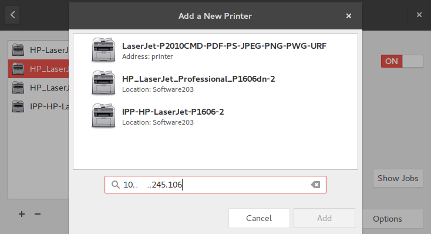

使用树莓派搭建无线打印机
办公室里的打印机的网口莫名其妙地坏掉了，只剩下USB打印还能用。总不能打印什么都端电脑过去打印机那边打吧，这时候就需要一个树莓派，来干点共享网络打印机的功能了。
物品准备
- 一个树莓派，2代3代都可以
- 一张至少16GB的TF卡
- 一个TF读卡器
- 一根网线
- 一个可以（或者是只能）通过USB打印的打印机
树莓派系统安装
区别于官方提供的镜像版本，我们将会采用一个专门给树莓派定制的镜像版本Hypriot。它在镜像内预先安装了armhf版本的docker，并且采用cloud-init在烧写的时候来初始化初始配置。用cloud-init有多爽呢，一般情况下我们得至少有个键鼠套装+显示屏才能完成树莓派的初步网络配置，而现在只需要在烧录镜像的时候指定userdata就可以完成初步的网络配置、用户管理等。
本文所有操作除了在树莓派上，其它均在ubuntu 16.04下进行操作
树莓派系统镜像
1 | wget https://github.com/hypriot/image-builder-rpi/releases/download/v1.10.0/hypriotos-rpi-v1.10.0.img.zip |
烧录工具flash
1 | sudo apt-get install -y pv curl python-pip unzip hdparm |
自定义烧录参数
烧录tf卡之前，首先需要定制一下cloud-init要用到的userdata文件。flash本身有提供几个sample模板，包含事先预置ssh公钥、配置静态ip、配置wifi连接密码等多种花式操作。这是我用来配置静态IP的模板，你可以根据自己需要修改当中的静态IP。
sample/static.yml
1 | #cloud-config |
烧录TF卡
可以使用sudo fdisk -l或者df -hT命令查看待烧录的TF卡的盘符，这里假设它为/dev/sdx。
1 | flash --userdata sample/static.yml -d /dev/sdx hypriotos-rpi-v1.10.0.img.zip |
烧录完就可以直接通过ssh直接连接到树莓派上
1 | clhu@t5 ~> ssh pirate@10.xxx.245.130 |
CUPS开启共享打印机
接下来在树莓派上进行操作
树莓派镜像源配置
在安装软件包之前，首先需要配置一下对应的镜像源，这里主要参考tuna的镜像源配置方法，意外惊喜是该镜像源可以直接走v6 :)。
- 编辑
/etc/apt/sources.list文件，删除原文件所有内容，用以下内容取代：
1 | deb http://mirrors.tuna.tsinghua.edu.cn/raspbian/raspbian/ stretch main non-free contrib |
- 编辑
/etc/apt/sources.list.d/raspi.list文件，删除原文件所有内容，用以下内容取代：
1 | deb http://mirrors.tuna.tsinghua.edu.cn/raspberrypi/ stretch main |
- 更新镜像源
1 | sudo apt update |
树莓派安装CUPS
1 |
|
CUPS服务配置
cups服务启动之后，我们就可以通过网页来对cups服务进行配置，类似于https://10.xxx.245.130:631，如下图所示。

依次点击其中的Administration -> Add Printer页面，会让你输一下管理员密码，保证接下来的操作有足够权限。
接下来只需要一路continue即可，需要注意的是Sharing一定要记得勾选。

打印机使用
在笔者所用的Ubuntu中，只需要打开打印机设置页面，点击+按钮来添加一个打印机。这时候只需要输入打印机的IP地址，就可以看到打印机列表中出现了我们通过树莓派共享的网络打印机。
